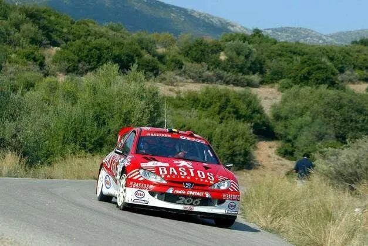
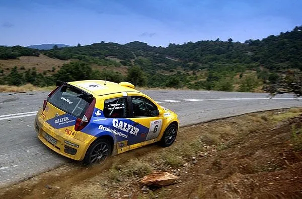
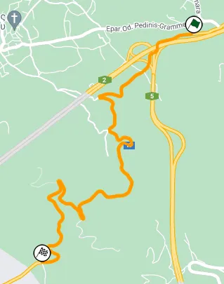
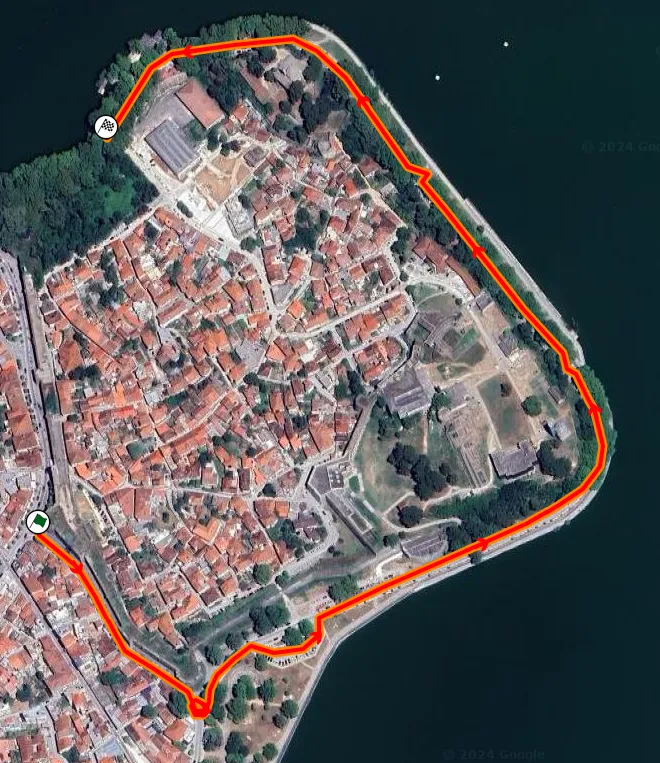
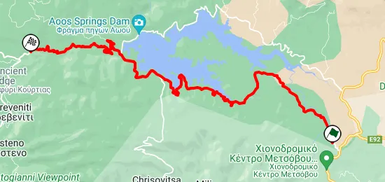
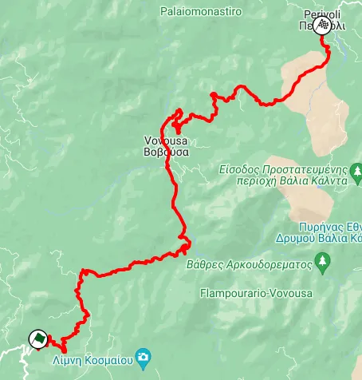
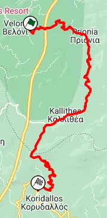
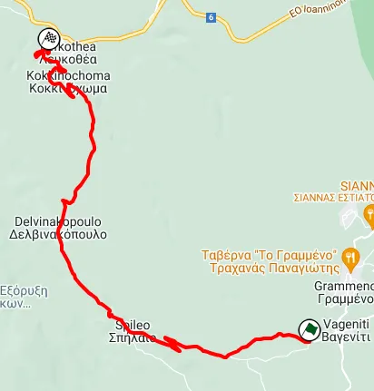
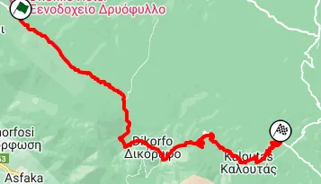
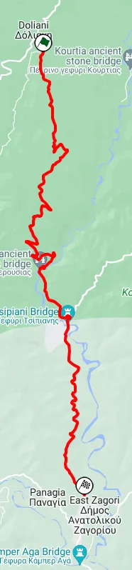

What could an ERC rally based in Ioannina look like?
Although Greece's claim to fame in the world of rallying is the legendary Acropolis Rally, the country has also hosted many ERC rounds in the past. Rally Halkidiki (also known as Rally ELPA), Rally Olympion and Rally Hermes are names that rally nerds would recognize at first glance. But it's not just their gravel roads that the Greeks have showcased to the international scene, but tarmac roads as well. From 2002 to 2006, Greece hosted a tarmac rally in the Peloponnese for the European Rally Championship, in 2007 Halkidiki returned as a mixed surface event, again in the ERC, and in 2011 there was a tarmac rally planned for the ERC based in Lamia but got canned due to the country's financial situation at the time. The less said about the mixed surface Acropolis in 2014, the better.

Greece last hosted an ERC event that wasn't Acropolis in 2010
Greece's tarmac roads return to the international rally scene in June, with Rally Fthiotidos being part of the TER Series calendar this season! A lot of fans in Greece would be intrigued to see the country return to the ERC calendar with a tarmac rally in the future, so that got myself and fellow Greek rally nerd Manos thinking what location would be ideal to host a tarmac rally in order to showcase some nice Greek roads. We decided to base the rally in Ioannina, in the north-west of the country, near the Pindos mountain range, with us two choosing the stages and collaborating on stage layouts etc. We were lucky enough to have a lot of beautiful roads to chose from, and we had to eliminate some insane looking stages because they were either too long or too far away from the HQ.
So without any more chit chat, let's get into the itinerary!
Friday
Shakedown/Qualifying - Dodoni - 5.52km

Map of the Shakedown stage
The shakedown stage has been used in the Ipirotiko Rally also based in Ioannina. It's located near the rally's HQ that's quite representative of the rally. The stage goes uphill in a semi-wide road, full of medium and fast speed corners. The shakedown will also be used for Qualifying, after which drivers will get to decide their starting position for Saturday. After Qualifying, the crews will head back to Ioannina for an SSS.
An onboard of the stage, the shakedown part ends at around 9 minutes.
SSS1 - Ioannina - 1.48km

Map of the SSS
The event's Super Special Stage starts outside the city's famous medieval castle, and goes down a road leading to the lakeside street. After a donut, the cars follow that before-mentioned, lakeside road. It's a relatively narrow path with trees along either side of it. The stage ends after a fast left hander, at a small port. The crews then head back to service.
A view of the SSS, about 1.2km in.
Saturday
SS2/5 - Metsovo - 22.68km

Map of the stage
The rally proper starts with a stage near the picturesque village of Metsovo. The 22km test starts off in an open setting, using a quite fast road. About 3.4km in, the road becomes more narrow and twisty, as the stage goes alongside a lake. There is a character change at around 15km, when the stage turns left just before a dam. The road then becomes downhill and narrower. At points the stage becomes faster as well, with trees going alongside the road. The first half of the test is reminiscent of the 2010 Rally Bulgaria Batak Lake stage, but the second one is quite unique, in a way I don't think I've seen something similar in the WRC before! The only thing I could think of comparing it to would be the second half of Platak, only narrower.
A view of SS2, at the 15km mark. If you continue left you can see the downhill part of the stage, whereas if you go backwards you will see the more open part of the stage
SS3/6 -Flambourari - 30.36km

Map of SS3/6
Stage 3 and 6 is the longest of the rally, at just over 30km! It starts off uphill for almost 5km in a rather worn, patched road, that is quite twisty. The stage then goes downhill for about 12km, with the road becoming more smooth compared to the previous part. At around 15.6km in, the cars will have to pass through a narrow bridge.
A view of SS3 after the 15.6km mark, as it passes through a village.
After that, the stage passes through a village, with the road giving Monte Carlo or Corsica vibes, being very narrow as it passes by the village's houses. After the village, the road becomes faster and more flowing, as well as wider. The last 2.5km are at an open plateau, with the stage giving Pikes Peak vibes but only downhill instead of uphill.
The Pikes Peak part of the stage
SS4/7 - Kallithea - 17.70km

The map of the last stage of the loop
The last test of the loop starts off similarly to how the previous one ends, with a Pikes Peak-esque downhill section. The stage passes through a village early on, with the road momentarily becoming broken and narrow, before returning to a medium wide and fast one. For the next 10km the road is uphill, retaining the same character. At around 12km in, the stage turns left to a road that goes downhill which is narrower and more broken. The end of the stage is quite twisty, with the setting and backdrop of the stage being reminiscent of Rally Roma Capitale. After the end of this one, the crews will head back to Ioannina for service before tackling these 3 stages again on the 2nd loop.
The ending of the stage on Street View
Sunday
SS8/11 - Spileo - 11.18km

Map of the first stage on Sunday
Sunday's first stage is completely different to the rest of the rally, with this test being reminiscent of something you'd find in Rally Croatia. The start of the stage is on a road that is broken in places, not very wide but not very narrow either, with many medium speed corners. Around 4km in, the road passes through a village, and the surface becomes more broken, with the road also being quite narrow. After that pass through the village, the road doesn't change, and the stage remains bumpy and narrow, but still medium speed to fast for around 2km. The stage then passes through another village, with the road having a big jump in the middle of the village! The stage becomes a bit smoother but twisty towards the finish.
The jump on the village square (featuring doggos!!!)
SS9/12 - Dikorfo - 15.50km

Map of SS9/12
Dikorfo is the longest stage of the day at 15km. This stage is quite Monte Carlo-esque, being 1000m up on the mountain. There's a lot of surface changes, with the stage going from smooth, to patchy to very broken tarmac. The stage is medium speed for the first 8 kilometres.
The look of the stage at around 6km in
The stage passes through a village after the 8km mark, but unlike the the previous stages, Dikorfo doesn't resemble the previous stages that passed through villages. This time the vibes are identical to Rally Monte Carlo, looking like something you'd see in the Alpes, not Greece. After a series of hairpins, the road becomes twistier and relatively smooth, a characteristic that it retains to the finish.
The stage as it passes through the village
SS10/13 [Power Stage] - Arachthos - 13.60km

Map of the Power Stage
The Power Stage of the rally takes its name from the river it runs in parallel to. The stage is similar in character to the previous stage, with the start especially being quite similar in terms of character. The stage passes through two bridges as the road goes over the river, with the second bridge being quite cool, as it passes next to a stone arch bridge from the 1800s.
View of the stage as it passes next to the stone arch bridge
After the two bridges, the stage becomes twistier, sinuous even, but the road remains rather smooth and a bit wider than before until the end of the stage.
You can check the full map of the concept itinerary as well as the full itinerary itself on the table below!
Comments